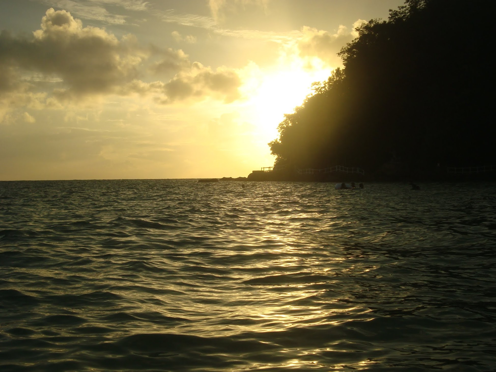
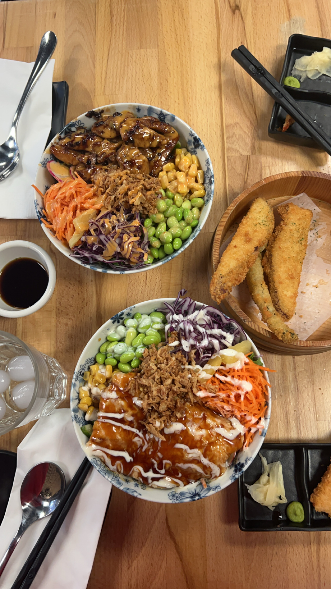

This place hosts a gorgeous white sand beach and a luxurious pool with a bar you can enjoy drinks at. The sunset was beautiful and there are many people singing karaoke in the background. There are lots of water activities you can participate in like the banana boat, disco boat, and tour boat. They offer filming with a drone so you can look back at your family and friends enjoying the water. The pool has colored lights at night and the drinks are delicious.
Downtown Calgary offers cafes, restaurants and many other activities in every nook of the area. The restaurants are multicultural, providing food originating or inspired from many countries such as Egypt, Japan, Peru, India and etc. This place is also nice to walk around in during the summer with your friends, visitng parks, and taking lots of pictures. One of the biggest and most popular event of Calgary is the stampede and it takes place in downtown as well.
Restaurant: Maru Sushi and Don
An area rich with waterfalls and nature. You can dine in a floating restaurant in Punta Isla Lake Resort, with entertainment such as a tour guide showcasing the culture of the area. You can drive to the 7 Falls and take in views of the hills, and various waterfalls around the area. They offer a zipline from 600 ft. above the ground where you can see the waterfalls and nature below you.